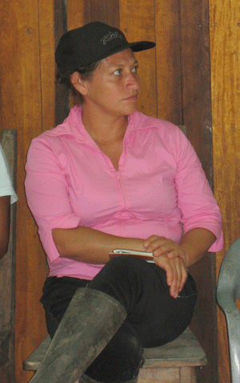

NUEVO PLAN DE MANEJO PARA LOS CEDROS
GRUPOS COMUNITARIOS
ADMINISTRARÁN EL BOSQUE PROTECTOR
José DeCoux decidió comprarse un terreno en Los Cedros a fines de la década de los 1980. Gracias a su decisión, esta joya de la biodiversidad ha sobrevivido la tala imparable que ha terminado con tantos bosques del país. Durante más de 20 años, el ambientalista se ha dedicado a construir consciencia entre los moradores de comunidades circundantes de la importancia de Los Cedros. Y ahora entrega la protección de la Reserva a las organizaciones de base asentadas en dichas comunidades. La razón: “tener más ojos” para vigilar la reserva mediante la creación de una red de personas y organizaciones cuyo futuro bienestar depende de la exitosa defensa de Los Cedros después de la partida del señor DeCoux de este mundo.
A fin de poner en marcha este plan, se organizaron un encuentro en Río Verde el 13 de julio y otro en Chontal el 6 de agosto. Durante los eventos, se inició le entrega de la administración del Bosque Protector Los Cedros a un Comité de Co-Administración (CCA) que consistirá en organizaciones comunitarias de la parroquia de García Moreno. Los grupos, todos con personería jurídica, son: el Grupo de Mujeres Flor de Pambil, con representantes de Cielo Verde y Río Verde, y el Comité de Ecoturismo Comunitario cuyos miembros incluyen representes del grupo de mujeres Hilos de El Paraíso y el Grupo de Mujeres de Magdalena Alto. El CCA trabajará con el Ministerio del Ambiente del Ecuador (MAE) y la Unidad para la Protección del Medio Ambiente (UPMA) para enfrentar las amenazas a Los Cedros
El bosque, una zona de amortiguamiento de la Reserva Ecología Cotacachi-Cayapas, se ubica en la vertiente sur de la Cordillera del Toisán en la zona de Los Manduriacos. Es uno de los más importantes “puntos calientes” de biodiversidad en el mundo. Las mujeres y los hombres que participarán en la administración de Los Cedros benefician de los servicios ambientales que provee el bosque protector, como la producción y purificación de agua y el secuestro de dióxido de carbono, el gas invernadero responsable por una buena parte del cambio climático.
¿Por qué ahora?
José DeCoux, fundador y administrador de Estación Científica Los Cedros, dijo que este es el momento de decidir el futuro de las comunidades alrededor del bosque: ¿sufrirán las secuelas de la desertificación producida por la tala de los bosques o tendrán futuro como agricultores y dueños de proyectos ecoturísticos?
Para Rocío Díaz, presidenta de Flor de Pambil, las reuniones son importantes en términos de la seguridad alimentaria, el suministro de agua y el buen vivir en general. “Para este rato hay pan, ¿y después?”, preguntó. La señora Díaz afirma que la meta de su grupo es “cuidar a lo máximo que podamos el medioambiente” y parar la tala de bosque.
Hasta 20 camionetas salen cada semana cargando madera destinada a los mercados de Quito, según moradores. Cuando la que escribe estas líneas estaba de regreso a casa el 6 de agosto después de una visita al bosque protector, observó a un grupo de hombres que metían tablas de cedro en una camioneta. Esto ocurre a diario.
La participación de las comunidades “es imprescindible”, el señor DeCoux dijo. Un problema mayor incluido en el nuevo Plan de Manejo es la existencia de “grandes superficies de tierras aptas para el cultivo en pocas manos”. Con el CCA, la reserva contará con mayor protección. Lutargo Méndez, del Ministerio del Ambiente, enfatizó este punto: “Ustedes viven aquí y conocen los que están afectados”, dijo a los asistentes en el encuentro en Río Verde.
El abogado Mattia Fosci, voluntario de Inglaterra que colabora en la redacción del Plan de Manejo, subrayó la importancia de aprender de los fracasos de otras comunidades que no pudieron parar la deforestación. “Tienen que cambiar la cultura antes de que los bosques se vayan”, dijo. El señor Fosci es experto en el programa REDD+, una iniciativa de las Naciones Unidos creada en 2008 para incentivar, mediante la compensación monetaria, a que los países en desarrollo protejan los bosques. La deforestación y la degradación de bosques representan casi el 20 por ciento de las emisiones de gases invernaderos al liberar el carbono almacenado en los árboles. Ecuador está entre los beneficiarios de esta iniciativa, con una asignación de cuatro millones de dólares.
Otras amenazas que enfrenta Los Cedros incluyen la minería, la caza ilegal y el tráfico de especies nativas.
Los Cedros, declarado bosque protector en 1994, tiene altísimo importancia ambiental. Los recursos hídricos que nacen en sus 6.400 hectáreas incluyen los ríos Magdalena, Verde y Manduriaco, que proveen agua potable a las comunidades aledañas. Alberga miles de especies plantas y animales, incluso varias especies endémicas y 28 especies de aves y mamíferos en peligro de extinción, según científicos nacionales e internacionales. (Para más información sobre el valor ambiental de Los Cedros, ver el reportaje especial del Periódico ÍNTAG, #64, marzo/abril de 2010.)
¿Por qué las mujeres?
El señor DeCoux especificó el rol fundamental de las mujeres en el manejo de Los Cedros. Mientras muchos hombres de la zona están involucrados en actividades extractivistas, las mujeres “más bien tienen interés en tener agua para sus hijos”, dijo. Las mujeres representan el 80 por ciento del Comité de Ecoturismo de Manduriacos.
Todas las mujeres expresaron su interés en participar en la administración del bosque. Carmen Espinosa, presidenta de Hilo del Paraíso, dijo que ella y sus compañeras están “completamente de acuerdo” con la meta de defender Los Cedros. La señora Espinosa añadió que las mujeres de El Paraíso están muy preocupadas por la mina propuesta por la empresa chilena CODELCO para su comunidad y como afectaría su cuenca y fuentes de agua. La mina se ubicaría en los linderos de Los Cedros (ver página______).
Rocío Díaz, de Flor de Pambil, dijo que las mujeres de su grupo “ya sienten la obligación de proteger esta área” y parar la tala de árboles. Indicó que no hay los inspectores necesarios.
Por eso, las mujeres y algunos hombres se inscribirán en un curso de capacitación de inspectores ofrecido por el MAE. Como guardabosques, patrullarán los linderos de Los Cedros y documentarán la tala ilegal con fotos y datos. Al encontrar un camión o camioneta con madera ilegal, tendrán la potestad de confiscar el vehículo. En fin, en gran parte, las mujeres estarán al frente de la lucha para proteger el bosque protector de invasores. Las comunidades se comprometieron a elaborar una lista de por lo menos 15 mujeres y hombres interesados en convertirse en Inspectores Honoríficos.
La cuestión económica
Desde la perspectiva económica, parar la tala de árboles será difícil. Según el Plan de Manejo, la tala ilegal contribuye más a la economía familiar que todas las actividades legales juntas en las que participan los involucrados, esto es, casi la mitad de la población. Un aserrador puede ganar más de 300 dólares mensuales mientras el dueño de la camioneta gana entre 2500 y 3000 dólares mensuales. En cambio, el ingreso promedio de una familia dedicada a trabajar la tierra es de entre 160 y 200 dólares mensuales.
Leonardo Ayala, morador de Flor de Pambil, describió la deforestación como una cadena motivada por el dinero: “Si hay quién compra, hay quién tala el bosque”, dijo.
Sin embargo, el potencial económico de Los Cedros. El señor DeCoux enfatizó que la deforestación quita la posibilidad de otras actividades económicas a largo plazo: agricultura, ganadería y ecoturismo, porque sin árboles, “ni la hierba crece bien”. La zona de Íntag es un buen ejemplo de este fenómeno. Por eso, el señor DeCoux aboga por una economía post-extravista que enfoca en productos renovables.
El ecoturismo es una esperanza real para Los Cedros, que es bosque primario asombroso, hogar de especies únicas como el oso de anteojos, el mono araña de cabeza café, el tigrillo, y el colibrí cola ángel de sol. “El turista que ve monos es un turista contento”, dijo el señor DeCoux.
El Plan de Manejo propone triplicar el ecoturismo en las comunidades aledañas durante los próximos cinco años. El Comité del Ecoturismo impulsará la elaboración de artesanías y la producción de café, ofrecerá clases de español para turistas, capacitará guías comunitarios naturalistas y abrirá nuevos senderos con señalización. Se espera que el 10 por ciento de los ingresos generados por el turismo se dedique a los Inspectores Honoríficos.
Como un “punto caliente” de biodiversidad, Los Cedros atrae a científicos, también. La nueva estación científica que se construirá en la parte alta del río Manduriaco aumentará la posibilidad de más estudios e investigaciones en el bosque protector.
Además, el Plan de Manejo cita a varios servicios ambientales que Los Cedros provee a la gente y que se puede cuantificar. Entre ellos están la secuestración de carbono, la producción de alimentos y materias primas, y la purificación y generación de agua potable. Según el Plan de Manejo, “Una estimación muy conservadora del valor económico directo de los servicios ambientales del Bosque Protector supera los 65 millones de dólares”. Aproximado 600 familias benefician de los servicios ambientales de Los Cedros.
Con la entrega legal del manejo de Los Cedros, las organizaciones comunitarias involucradas podrán inscribirse en el programa gubernamental Socio Bosque. También será más fácil gestionar fondos de ONGs ambientalistas. Pero es importante recalcar que mientras los grupos comunitarios administrarán el bosque, el área protegida todavía pertenece al MAE.
Hoja de ruta
 El 14 y 15 de julio, José DeCoux llevó a representantes del MAE y de las organizaciones comunitarias en una inspección preliminar de los linderos de Los Cedros para conocer los sitios amenazados por la tala ilegal y la invasión.
El 14 y 15 de julio, José DeCoux llevó a representantes del MAE y de las organizaciones comunitarias en una inspección preliminar de los linderos de Los Cedros para conocer los sitios amenazados por la tala ilegal y la invasión.
Para la entrega del manejo, el CCA preparará una Carta de Intención para septiembre que formalizará su rol en la administración de Los Cedros. El CCA se reunirá una vez por mes para analizar las amenazas, la promoción del ecoturismo y otros temas. El Comité de Ecoturismo y Flor de Pambil tendrán entre tres y cinco representantes cada uno en el CCA. Cada representante tendrá un voto, y tres Curadores Técnicos CCA tendrán un voto colectivo. Los Cedros será dividido en el área oriental, de las cuencas de los río Los Cedros y de la Plata, donde se ubica la Estación Científica Los Cedros; el Comité de Ecoturismo y del señor DeCoux administrarán esta área con participación comunitaria. Las miembros de Hilos del Paraíso serán las cuidadoras de los nacimientos del río Manduriaco Chico y las mujeres de Magdalena Alto aspiran asumir el manejo del río de la Plata. El área occidental, de las cuencas de los ríos Manduriaco y Verde, será gestionada por Flor de Pambil, con planes para una nueva estación científica-turística y nuevos senderos. En vista de su actual inaccesibilidad, su geografía y su altura, se supone la existencia de un alto número de especies endémicas de plantas e insectos. Hay interés también en ampliar el Bosque Protector para incluir la cuenca entera del río de la Plata.
En el encuentro en Chontal el 6 de julio, la señora Carmen Espinosa de El Paraíso enfatizó que ella y sus compañeras están listas para trabajar en la protección del bosque protector, pero lo importante es que la entrega del manejo sea legal. El señor DeCoux le respondió en términos claros: “Eso va a ser legal y para siempre”. Y añadió: “Prepárense para hacer organizaciones duraderas”.
La doctora Linda D’Amico contribuyó a este reportaje.
Pies:
Rocío Díaz, presidenta del grupo de mujeres Flor de Pambil, en el encuentro en Río Verde el 13 de julio. Con sus compañeras está comprometida a defender Los Cedros en calidad de Inspector Honorífica.
El Pozo de Miel en Los Cedros. El bosque protector genera agua para las comunidades circundantes.